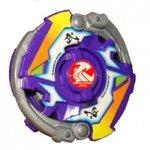

Samurai Changer MS
| Samurai Changer MS (Metal Sword) | |
|  | |
| Number: | MA-20 |
|---|---|
| System: | HMS |
| Type: | Balance |
Contents
Bit Protector (BP): Samurai Emblem
The Bit Protector of this Beyblade is Samurai Emblem. It is the third mold version of Bit Protectors. It is the tightest version; there is almost no room between the BP and AR.
Attack Ring (AR): Samurai Upper
- Weight: 22 grams
Samurai Upper is essentially an upgrade to the previously released Circle Upper of Death Gargoyle MS. It uses the same metal frame as the second mould of Circle Upper. However, the ABS Caul has been changed. While the ABS Caul of Circle Upper is very conservative and covers very little of the metal frame, the ABS Caul of Samurai Upper plays its own role, adding more Attack and Defense ability with the use of more plastic.
The ABS Caul of Samurai Upper contains many notches and protrusions that give it Smash Attack ability which was not present in Circle Upper. In addition, the heavier weight and higher amount of plastic to absorb shock from hits contributes to its Defense ability. The sacrifice is that it has less Survival ability, but considering that Circle Upper was generally used for Attack-types, this is not seen as much of a drawback. For Survival-type combos, Circle Upper is still a better choice.
Samurai Upper's weight class is important to consider as well. It is the heaviest HMS AR, with Jiraiya MS's Jiraiya Blade being the same weight. This weight gives it higher Defense ability, which is especially important to consider because of the fact that this AR is generally used in high-speed Attack-type combos. Being able to survive the recoil after a hit is an important attribute. In addition, this weight gives Samurai Upper higher spin velocity, making it harder to knock out of the Bey Stadium.
Another feature that makes Samurai Upper so powerful is its width. It is the widest of all HMS ARs. This means that it has the highest attack range of all HMS ARs, making it easier to make contact with the opposing Beyblade during a battle. While not a giant advantage in Tornado Balance Type S, where contact is already likely, this wide range makes it much easier to hit Beyblades in wider stadiums.
Of course, Samurai Upper's greatest attribute is its Upper Attack. Aside from Circle Upper, there is no HMS AR that can match Samurai Upper's Upper Attack ability. The metal frame has very steep slopes that can easily lift the opposing Beyblade.
Samurai Upper works optimally in right spin, where it can use Upper Attack. However, even in left spin, the ABS Caul affords it some Smash Attack, and the heavy weight can assist in pushing the opposing Beyblade away.
Use in Attack Customization
Samurai Upper is the most popular AR for Attack-type customization, for all of the reasons outlined above. With this AR, you can build this staple Attack combo:
- AR: Samurai Upper (Samurai Changer MS)
- WD: CWD Defense Ring (Sea Dragon)
- RC: Grip Flat Core (Ultimate Version) (Dragoon MS UV)
Use in Defense Customization
Samurai Upper's heavy weight and round shape make it a strong choice for Defense combos.
- AR: Samurai Upper (Samurai Changer MS)
- WD: CWD God Ring (Shining God MS)
- RC: Bearing Core 2 (Jiraiya MS)
Weight Disk (WD): Circle Heavy
See Circle Heavy.
Running Core (RC): Battle Change Core
- Weight: 11 grams
Technically, Battle Change Core is two parts: the RC itself, and a plastic CWD piece that attaches to it. We will cover each part individually.
Running Core Part
- Weight: 8 grams
Battle Change Core's gimmick is that when it is hit hard enough, it switches between Attack mode and Survival mode. In Survival mode, a sharp tip ejects from the bottom. However, in Attack mode, the tip retracts, and the flat-tip casing allows it to move quickly through the Bey Stadium.
This gimmick works with a switch mechanism inside the RC. When either part of the RC rotates, the switch is activated and the mode switches. Theoretically, there is no limit to how many times modes can switch during battle.
The upside to this gimmick is that it allows you implement two strategies at once. For example, you can shoot in Attack mode and hope to switch into Survival mode to outlast the opponent at the end. Or, you can shoot in Survival mode to slowly wear down the opponent and then hope to switch to Attack mode to finish them off.
The downside is evident in the previous paragraph; there is a lot of hoping involved. Because you have no real control over when the mode switches, you can only hope it occurs at the correct time. While there is no way to control when it switches, you can control if it switches ...
Outside of its gimmick, there are some great advantages to this RC. The ability to add a CWD to it adds a lot of versatility to it. For example, you can apply a free-spinning CWD to it to help prevent it from changing modes. You can also apply different CWDs to change attack styles or to alter the weight.
Another advantage is the RC's weight itself. Without the CWD, it weighs 8 grams, but with the CWD is weighs 11g, making it the heaviest RC by a rather large margin. This heavy weight gives it a lot of force to hit with, and makes it significantly more difficult to knock around.
However, there are some disadvantages to this RC that prevent it from working as well as the previous statements would infer. Its height and width make it a rather large target susceptible to taking critical hits more often than usual. The width of the lower portion also scrapes against the Bey Stadium floor often when it is knocked off balance, which causes the Beyblade to lose a lot of spin. In addition, while it can switch between Attack and Survival mode, it does neither of these things particularly well; there are multiple better choices for Attack and Survival.
For Defense customization, it can work well, but Jiraiya MS's Bearing Core 2 and Round Shell MS's Rubber Weight Core tend to outclass it. Battle Change Core has inferior grip and survival compared to Bearing Core 2 and weighs less than Rubber Weight Core, with less shock absorption as well.
Battle Change Core's true advantages lay in its weight and its ability to carry a CWD; if anything, the mode-change gimmick simply detracts from these advantages.
CWD Part
- Weight: 3 grams
The CWD part can work in two modes; Upper Attack (right spin) mode or Force Smash mode (left spin). Because it is so tall, it is ill-advised to use it in Force Smash mode because it will easily scrape against the stadium. However, Battle Change Core is the only part that can use this CWD in Upper Attack Mode.
Because the AR on Battle Change Core is so high up, it generally cannot make contact with the opposing Beyblade. To compensate for this, they gave this CWD Part rather powerful Upper Attack. It can also use a blunt edge in left spin for Smash Attack; however, the recoil on this can be critical.
Essentially though, this CWD is designed to act as a trigger for Battle Change Core's mode change, and has little use outside of it.
Use in Defense Customization
Battle Change Core's heavy weight and ability to carry a CWD make it a good RC choice for Defense.
- AR: Samurai Upper (Samurai Changer MS)
- WD: CWD God Ring (Shining God MS)
- RC: Battle Change Core (Samurai Changer MS)
- CWD Plastic Part: CWD God Ring (Shining God MS)
Customization With Slash Riger MS's CWD Free Crusher
There is an interesting trick you can perform with this RC. CWD Free Crusher is generally free-spinning so it cannot do any damage. However, by combining it with this RC, the CWD plastic part of Battle Change Core will prevent the CWD Free Crusher from spinning. This combo has very high Smash Attack, but also has high recoil. If it doesn't finish the battle almost immediately, it has very little chance to win.
- AR: Samurai Upper (Samurai Changer MS)
- WD: CWD Free Crusher (Slash Riger MS)
- RC: Battle Change Core (Samurai Changer MS)
Other Versions
- Samurai Changer MS - Fukubako Box 2005 Version (Red)
- Samurai Changer MS - Fukubako Box 2005 Version (Black)
Gallery
Samurai Changer MS - Original Version
-
Samurai Changer MS box
-
Samurai Changer MS back of box
-
Samurai Changer MS sticker sheet
-
Samurai Changer MS parts without stickers
-
Samurai Changer MS parts
-
Top view
-
3/4 view
-
Side view1
-
Side view2
-
Bottom view- flat tip
-
Bottom view- sharp tip
Samurai Changer MS - Black Version (Fukubako Box 2005)
-
Samurai Changer MS Black Ver. top view
-
Samurai Changer MS Black Ver. side view
-
Samurai Changer MS Black Ver. underside view
Overall
Samurai Changer MS is a solid package overall. The RC does have its uses; however, for the most part it is outclassed. However, Samurai Upper is an improvement on Circle Upper in most areas and is the most important AR of the HMS generation. Every Blader has to own this AR to compete on a serious level.